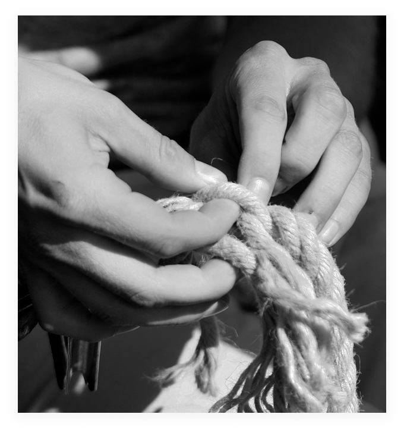
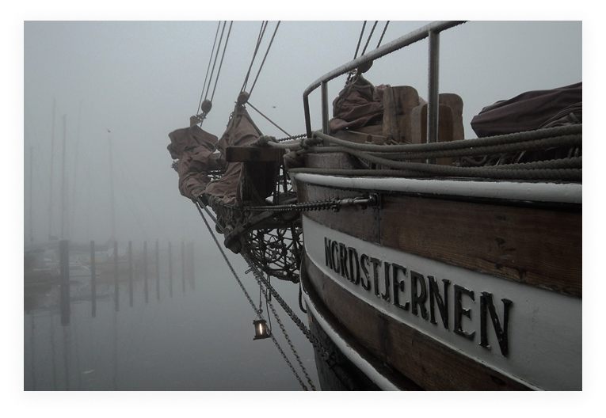

Die Nordstjernen wurde 1920 als Snurrewadenkutter unter diesem Namen und mit der Baunummer 59 auf der Werft Gebrüder Nipper in Skagen gebaut.
Sie ist einer der wenigen noch erhalten gebliebenen so genannten dänischen Haikutter. Dieser Name bezieht sich weniger auf die Art der gefangenen Fische, wie man vermuten könnte, als vielmehr auf einen bestimmten Mechanisierungsgrad des Schiffes. Die Nordstjernen hat von Anfang an einen Motor gehabt und konnte so die beiden Enden des Netzes, die Snurrewade, ohne Hilfe eines Beibootes, der Snurrejolle, bedienen. Für ihre damals noch segelnden Konkurrenten erschien dieses Verhalten bedrohlich, da viel effektiver, und es bürgerte sich für die neuen Schiffe der Ausdruck „HAIE“ ein. Man bezeichnet diesen Schiffstyp heute nach Stellung der Masten als Gaffelketsch oder Galeasse, wobei der ehemalige Haikuter an der Rumpfform immer noch erkennbar ist.
Um ihr den Weg auf eine Abwrackwerft zu ersparen, wurde sie nach Beendigung ihres langen Fischereilebens zum Freizeitschiff umgebaut. Mittlerweile wird die Nordstjernen seit einigen Jahrzehnten von ihrer Eigentümergemeinschaft und Freunden des Schiffes in deren Freizeit in Stand gehalten und gepflegt.
Mit den Reisen während der Sommermonate und mit Hilfe der zahlenden Gäste, soll sie als schwimmendes Museum und lebendiges Exponat der nordeuropäischen Industrie- und Fischereigeschichte für die Zukunft erhalten bleiben.
Im August 2015 feierte Nordstjernen seinen 95. Geburtstag.
